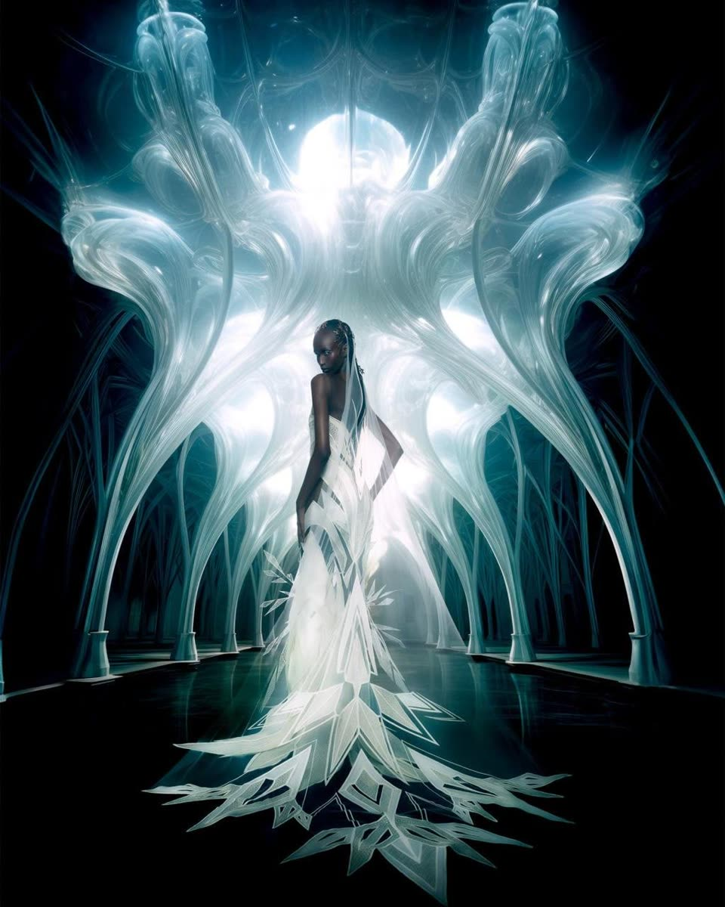

Crystalline couture: a white gown of razor-thin glass panels and ice shards inside a translucent organic cathedral
WRD-093WardrobeGPT Image 2.0by @Madhuribhai2026-11-20

An avant-garde GPT Image 2.0 couture still where the gown is written as architecture (hundreds of translucent geometric panels, ice-like shards, glass feathers, angular structures extending from the waist and trailing across a black floor) and the set rhymes with it (a symmetrical crystalline cathedral backlit by a circular white source). The prompt fixes a five-colour palette, a low-angle centred composition with the model small against the scale, and backlit light scattering through the translucent materials.
Prompt
Ultra-photorealistic 8K cinematic fashion editorial, a breathtaking avant-garde fashion model standing alone in the center of an immense futuristic cathedral constructed from enormous translucent organic structures resembling flowing glass, frozen liquid, and delicate bioluminescent fibers. The model is a striking dark-skinned woman with an elegant sculptural face, sleek braided hair cascading down her back, and a powerful yet graceful runway presence. She wears an extraordinary floor-length white crystalline couture gown, an architectural masterpiece made from hundreds of razor-thin translucent geometric panels, delicate ice-like shards, layered glass feathers, and intricate angular structures extending outward from the waist and trailing dramatically across the polished black floor. The dress appears almost weightless, with exquisite translucent details catching the surrounding light. Behind her rises a gigantic symmetrical organic structure resembling a futuristic cathedral mixed with a living crystalline organism. Towering translucent arches twist and branch overhead, creating the impression of an enormous frozen biological sculpture. At the very center, a brilliant circular white light source illuminates the entire structure from behind, producing an almost celestial atmosphere. Color palette: icy white, pale cyan, deep petroleum blue, luminous turquoise, and absolute black shadows. Composition: perfectly centered full-body fashion portrait, extreme architectural scale, low-angle perspective, extraordinary depth, symmetrical framing, the model appearing small against the monumental environment. Lighting: intense volumetric backlighting, realistic light scattering through translucent materials, subtle atmospheric haze, delicate reflections on the glossy obsidian floor, cinematic highlights and deep shadows. Photography style: high-end experimental haute couture campaign, visionary architectural photography, realistic human anatomy, physically believable materials, intricate micro-details, sophisticated editorial art direction, breathtaking scale, medium-format photography, 8K RAW, extraordinary dynamic range. No typography, no logos, no watermark, no cartoon aesthetics, no artificial-looking skin, no oversaturated colors.
Our Seedance 2.5 adaptation
[ADAPTED for Seedance 2.5 by Grok Bot; not the creator's prompt. Follows the official BytePlus Seedance 2.5 prompt guide and its official sd25-pe prompt-optimizer skill: parameters only on the API line (not in the prompt body), subject + action + scene, then visuals, camera (move, subject, start, direction, arrival) and sound; only the source's own exclusions are kept.] API: duration 6, ratio 4:5 (taken from the first frame), resolution 1080p (4k for a final), generate_audio true; first_frame = the WRD-093 still. 【Subject】The model exactly as in the first frame: sleek braided hair down her back, floor-length white crystalline couture gown of thin translucent geometric panels, ice-like shards and glass feathers, its train spread across the glossy black floor. 【Action】She walks slowly toward camera with a runway step; the gown's panels shift and catch the backlight, the train slides over the floor behind her without deforming. 【Scene】The symmetrical translucent organic cathedral and the circular white light source behind her stay unchanged. 【Camera】Low angle, centred and symmetrical; very slow push-in that ends at full-body framing. 【Visuals】Intense volumetric backlight scattering through the translucent materials, subtle haze, reflections on the obsidian floor; icy white, pale cyan, petroleum blue and turquoise with black shadows. 【Sound】Deep reverberant ambience, soft glassy chimes as the panels touch, measured footsteps. No typography, no logos, no oversaturated colours.
Tags: GPT Image 2.0, ChatGPT, haute couture, architectural gown, translucent panels, backlit, symmetry, icy palette, low angle, image